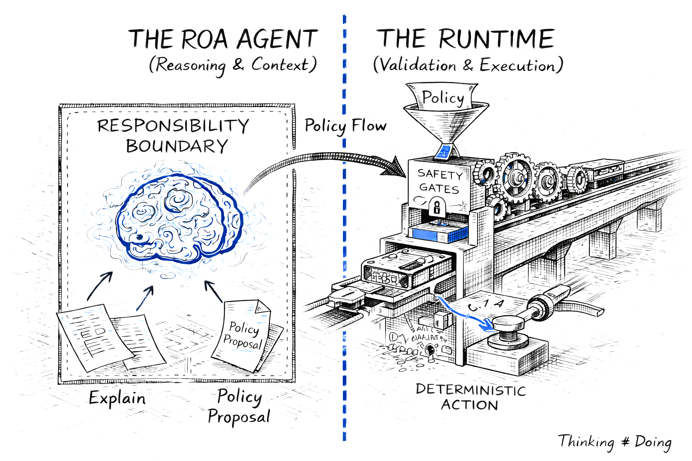

Author: Artur Huk | GitHub | Created: 2026-01-05 | Last updated: 2026-02-20
Decision Intelligence Runtime (DIR): An Architectural Pattern for Safe AI Execution

Bridging the gap between probabilistic reasoning and deterministic action
0. Abstract
Most contemporary AI agent frameworks operate on a simple loop: observe, reason, and act. While effective for conversational tasks, this model fails in high-stakes environments where actions have financial or physical consequences. The core issue is architectural: Large Language Models (LLMs) are probabilistic engines, yet they are often given direct control over deterministic interfaces (APIs, databases).
This paper introduces the Decision Intelligence Runtime (DIR), an architectural pattern derived from two years of prototyping AIvestor, an autonomous algorithmic trading system. While born in the financial domain, DIR is not a trading-specific tool. It was designed to create a "Digital Investment Twin"-a system capable of understanding a user's strategy, executing transactions on their behalf, and rigorously documenting every decision. This pattern is equally applicable to any domain requiring auditable autonomy, from cloud infrastructure management to supply chain logistics.
DIR applies principles from distributed systems orchestration (sagas, idempotency) and security (policy enforcement points) to the domain of AI agents. It proposes a strict separation of concerns where agents are responsible for Reasoning (proposing strategies) and a deterministic runtime is responsible for Execution (validating and applying those strategies).
By decoupling intent from action, DIR solves common stability issues such as race conditions, hallucinations in function calls, and execution of stale decisions. This document outlines the pattern's core components, including the DecisionFlow ID (an adaptation of distributed tracing for reasoning chains) and the Decision Integrity Module, offering a blueprint for moving agents from experimental scripts to reliable production systems. Formally, DIR is an architecture designed to prevent Illegal Decision States - conditions where Authority, Context, Time, Intent, or Evidence invariants are violated - and the DIM is the enforcement mechanism that makes such states unreachable.
1. Motivation: Why Agents Need a Runtime
Over the last two years, I built and operated AIvestor, an autonomous system designed to manage a virtual trading portfolio. The initial implementation followed the standard "agentic" pattern popular in the industry: an LLM loop that analyzed market data and directly called broker APIs.
The results were technically impressive but operationally terrifying.
The system was capable of sophisticated reasoning but lacked execution discipline. It would occasionally attempt to sell positions it no longer held because of a state update lag. It would sometimes "hallucinate" a trade retry loop, ignoring API rate limits. Most critically, it treated time as an abstract concept; a "buy" decision made based on a price from 10 seconds ago would be executed 30 seconds later, often incurring slippage that invalidated the original strategy.
These were not failures of intelligence. They were failures of architecture.
1.1 The "Probabilistic to Deterministic" Gap
The fundamental problem in modern agent design is the collapse of two distinct concerns into a single loop:
- Reasoning (Probabilistic): The agent interpreting context. This is messy, creative, and non-deterministic.
- Execution (Deterministic): The system changing state (e.g., sending money, updating a record). This requires strict guarantees.
In standard software engineering, we solve similar problems using patterns like CQRS (Command Query Responsibility Segregation). We separate the intent to change data from the process of changing it. Yet, in most AI frameworks, we allow the probabilistic model to write directly to the "database" of the real world.
When reasoning and execution are interleaved, non-determinism leaks into operational behavior. Safety mechanisms become prompts ("Please do not trade if volatility is high") rather than hard constraints. As any security engineer knows, prompts are not permissions.
1.2 Moving Beyond "Prompt Engineering" to "System Engineering"
To stabilize AIvestor, I had to stop treating it as a chatbot and start treating it as a distributed system. I realized that reliable agents require the same infrastructure we use for microservices, adapted for the unpredictability of LLMs:
- Orchestration: Just as we use tools like Temporal or Cadence to manage long-running workflows, agents need a runtime to manage the lifecycle of a decision.
- Idempotency: Agents will repeat themselves. The system must recognize duplicate intents and prevent duplicate side effects (e.g., executing the same trade twice).
- Traceability: In a microservice, we use a Trace ID (OpenTelemetry) to follow a request. In an agent system, we need to trace the reasoning chain that led to an action. This concept evolved into what I call the DecisionFlow ID (DFID).
- Time-to-Live (TTL): Data expires. An agent's intent must have a strict validity window. If the runtime cannot execute the decision within that window, it must be discarded, not delayed.
1.3 From Experiment to Pattern
The Decision Intelligence Runtime (DIR) is not a software product. It is a set of architectural constraints and patterns designed to make AI systems auditable and safe.
It shifts the design philosophy from Agent-Centric (how smart is the model?) to System-Centric (how robust is the execution?).
- Agents answer: "What should we do and why?"
- The Runtime answers: "Is this action allowed, valid, and safe to execute right now?"
A note on terminology: Throughout this document, 'ROA' refers to Responsibility-Oriented Agents, a pattern for bounding AI autonomy, unrelated to the older Resource-Oriented Architecture definition.
The following sections define the components of this runtime, illustrating how to wrap "fuzzy" agent logic in a "hard" engineering shell.
2. Defining the Scope: The Runtime as Middleware
In the early iterations of AIvestor, the agent code was monolithic. The same Python script was responsible for parsing news, deciding on a strategy, and sending HTTP requests to the broker. This tightly coupled design meant that a bug in the reasoning logic (e.g., a loop caused by a misunderstood prompt) resulted in direct operational hazards.
To fix this, I adopted a pattern familiar to OS developers: Kernel Space vs. User Space separation.
In this architecture, the Decision Intelligence Runtime (DIR) acts as the Kernel. It manages resources, enforcing permissions and time constraints. The Agents operate in User Space; they can request actions, but they cannot execute them directly.
2.1 The Architectural Layering
DIR sits strictly between the probabilistic agents and the deterministic infrastructure.
---
title: Decision Intelligence Runtime - High-Level Architecture
config:
theme: neutral
look: classic
---
flowchart LR
%% Professional color scheme with improved contrast
classDef userSpace fill:#E8EAF6,stroke:#3F51B5,stroke-width:2px,color:#1A237E,font-weight:bold;
classDef kernelSpace fill:#E8F5E9,stroke:#388E3C,stroke-width:2px,color:#1B5E20,font-weight:bold;
classDef infraSpace fill:#FFF3E0,stroke:#F57C00,stroke-width:2px,color:#E65100,font-weight:bold;
classDef logStyle fill:#FFEBEE,stroke:#C62828,stroke-width:1px,color:#B71C1C;
subgraph User_Space ["`**USER SPACE**<br/>Probabilistic Reasoning`"]
Agent1(["`**Agent A**<br/>Strategist`"]):::userSpace
Agent2(["`**Agent B**<br/>Executor`"]):::userSpace
Agent3(["`**Agent C**<br/>Analyst`"]):::userSpace
Agent1 -->|Proposes| Policies
Agent2 -->|Proposes| Policies
Agent3 -->|Proposes| Policies
Policies["`**Policy Proposals**<br/>Claims, not Facts`"]:::userSpace
end
subgraph Kernel_Space ["`**KERNEL SPACE**<br/>Deterministic Runtime`"]
DIM{"`**Decision Integrity**<br/>**Module**<br/>Validation Gate`"}:::kernelSpace
ContextCompiler["`**Context Compiler**`"]:::kernelSpace
EscalationManager["`**Escalation Manager**`"]:::kernelSpace
ExecutionEngine["`**Execution Engine**<br/>Idempotent Side Effects`"]:::kernelSpace
RejectLog["`**Audit Log**`"]:::logStyle
ContextStore["`**Context Store**<br/>Session State & Memory`"]:::kernelSpace
Policies ==>|Submit| DIM
DIM -.->|Reject/Expire| RejectLog
DIM -.->|Reject Reason / Feedback| Agent1
DIM -.->|Reject Reason / Feedback| Agent2
DIM ==>|Accept| ExecutionEngine
DIM -.->|Ambiguous| EscalationManager
ContextStore --> ContextCompiler
ContextCompiler -->|Working Context| Agent1
end
subgraph Infrastructure_Space ["`**INFRASTRUCTURE**<br/>External Systems`"]
ExtAPI1["`**API**`"]:::infraSpace
ExtAPI2["`**Database/ERP**`"]:::infraSpace
ExtAPI3["`**Notification Service**`"]:::infraSpace
ExecutionEngine -->|Execute| ExtAPI1
ExecutionEngine -->|Execute| ExtAPI2
ExecutionEngine -->|Execute| ExtAPI3
end
%% Clean subgraph styling
style User_Space fill:#FAFAFA,stroke:#3F51B5,stroke-width:3px
style Kernel_Space fill:#FAFAFA,stroke:#388E3C,stroke-width:3px
style Infrastructure_Space fill:#FAFAFA,stroke:#F57C00,stroke-width:3pxIts responsibilities are scoped to:
- Orchestration: Receiving unvalidated proposals from agents and processing them through a deterministic pipeline.
- Validation: Functioning as a Policy Enforcement Point (PEP)[^1], similar to OPA (Open Policy Agent)[^2] in cloud-native security.
- Translation: Converting "soft" agent intents (policies) into "hard" execution commands (API calls) with idempotency guarantees.
- Feedback: Closing the loop by returning
ValidationFeedbackevents to the Agent. When a policy is rejected (e.g.,RISK_LIMIT_EXCEEDED), the Runtime must inform the Agent why, so it can attempt self-correction in the next cycle.
2.2 What It Is Not (Scope Exclusion)
Crucially, the Runtime is not an Agent. It contains no LLMs and performs no semantic reasoning. If the system needs to "think" or "interpret," that belongs to the agent layer. The Runtime is purely a state machine designed to govern the side effects of that thinking.
2.3 The Agent Registry: System of Record for Responsibilities
In a static system, hard-coding agent permissions works. In AIvestor, as specialized agents (e.g., "Momentum Trader", "Hedge Manager") were added and removed dynamically, hard-coding failed.
DIR introduces an Agent Registry-a service discovery[^3] mechanism for intelligence.
- Registration: On startup, an agent registers its
Responsibility Contract: its ID, its subscribed inputs (Context), and its authorized outputs (Policy Types). - Capability Contract: The Registry acts as the source of truth for ROA constraints. When the Validation Layer asks "Can Agent X trade Asset Y?", it queries the Registry, not the Agent. This prevents agents from self-granting permissions via prompt injection.
Conceptual Decomposition (Single Service, Multiple Authorities)
Although implemented as a single service, the Registry fulfills multiple conceptual authorities*:
- Identity & Capability Authority
- Schema Authority
- Reservation / Lock Authority
- Lifecycle Authority
This decomposition is conceptual, not necessarily physical, and exists to prevent semantic overloading of responsibility.*
Beyond capability tracking, the Agent Registry facilitates Resource Locking and Reservation. In environments where multiple agents (e.g., concurrent PositionAgents) operate on a shared finite resource-such as a single capital pool or a limited API throughput-the Registry acts as a synchronization point. It allows the Runtime to grant temporary 'Reservation Locks' to a DecisionFlow.
Operational Resilience (Addressing SPOF): The Registry is a critical component. To prevent it from becoming a Single Point of Failure (SPOF), the Runtime implements Local Responsibility Contract Caching. * Cache Strategy: The Runtime caches Agent Responsibility Contracts locally with a short TTL (e.g., 60 seconds). * Degraded Mode: If the Registry is unreachable, the Runtime continues to serve known agents using cached definitions. New agent registrations or schema updates are rejected until connectivity is restored.
Note on Schema Evolution: This dynamism requires that Agents do not "memorize" the policy schema indefinitely. Instead, the Agent Registry serves the current version of the JSON schema dynamically during the Context compilation step. This ensures that even as capabilities evolve, the Agent always reasons against a valid, up-to-date interface contract.
Strict Versioning (Avoiding "Contract Hell"):
In distributed agent systems, mismatched expectations lead to failures. The Agent Registry mandates Semantic Versioning (SemVer) alignment. An agent initialized with v1.2 Responsibility Contracts must negotiate with a Runtime supporting v1.x schemas. If a disconnect is detected, the Runtime rejects the agent's registration during the handshake, preventing runtime parsing errors in production.
Registry Updates and Flow Binding:
Registry updates are versioned. A DecisionFlow is bound to the Registry snapshot version active at CREATED state. Any mid-flow authority revocation (e.g., security kill-switch) triggers an immediate ABORT on the next JIT check, ensuring no policy executes under revoked permissions.
---
title: The Capabilities Handshake - Startup Sequence
config:
look: classic
---
sequenceDiagram
autonumber
participant Agent as Agent (User Space)
participant Registry as Agent Registry (Kernel)
Note over Agent: **Startup Phase**<br/>Agent loads local config
Agent->>Registry: **REGISTER**<br/>{ ID: "Trader_Alpha", Ver: "1.2", Caps: ["TRADE"] }
activate Registry
Note right of Registry: **Verification Gate**<br/>1. Is "Trader_Alpha" allowed?<br/>2. Is v1.2 supported by v1.5 Runtime?
alt Version Mismatch (e.g. Runtime is v2.0)
Registry-->>Agent: **REJECT** (406 Not Acceptable)
Note over Agent: **Enter Safe Mode**<br/>(Passive / Retry with v2.0)
else Handshake Successful
Registry-->>Agent: **ACCEPT** (Session Token)
Note over Agent: **Schema Sync**<br/>Don't assume, Ask.
Agent->>Registry: GET /schema/policy/latest
Registry-->>Agent: { "schema": "v1.5.2-stable" }
Note over Agent: **Ready** (Listening for Triggers)
end
deactivate Registry2.4 Outbound Translation Gate (Anti-Exfiltration Gate)
In the context of the Agentic DMZ paradigm (where external-facing conversational agents are reduced to stateless "Receptionists"), a major vulnerability is the "Broker Fuzzing Attack." A malicious external user or agent may intentionally submit invalid payloads to observe the resulting error messages, thereby reverse-engineering the system's inner business logic, rules, and proprietary pricing parameters.
The Outbound Translation Gate is a deterministic component of the DIR Kernel that acts as an outbound firewall:
1. Data over Narrative: The Execution layer and the DIM never generate free-text prose for external consumption. They emit strict, frozen data objects (e.g., ValidationFeedback with DimReasonCode.LIMIT_EXCEEDED).
2. Dictionary Mapping: The Translation Gate enforces a rigid dictionary mapping between internal, sensitive codes and safe, generic public strings. For example, REJECT: TOTAL_VALUE_EXCEEDS_REINSRUANCE_CEILING is destructively mapped to {"status": "DECLINED", "message": "Outside current underwriting parameters"}.
3. Epistemic Amnesia Preservation: By ensuring the outbound flow traverses this gate, the Kernel guarantees that INTERFACE agents never possess the semantic context of why an action was denied. Consequently, no conversational manipulation can force them to leak Intellectual Property.
3. System Invariants
Instead of a "manifesto," DIR relies on a set of architectural invariants. These are the constraints that must hold true for the system to be considered safe, regardless of how "creative" the LLM becomes.
3.1 Invariant 1: Deterministic State Transitions
While the inputs to the system (User Space reasoning) are probabilistic, the transition from a Validated Policy to an Execution (Kernel Space) must be deterministic.
- User Space (Probabilistic): Agents, LLMs, prompts.
- Kernel Space (Deterministic): Validation logic, state machines, API calls.
Given the same Policy Proposal, the same Context Snapshot, and the same Time, the Runtime must always produce the exact same Validation Result. This requires that Hard Gates (blocking validation) be implemented in standard code (Python/Go/Rust) or a policy engine (Rego). Probabilistic validation (LLM-based checks) must remain in the User Space or serve as non-blocking observers, unless explicitly configured otherwise (see Sec 6.3).
3.2 Invariant 2: The "Reasoning-Execution" Wall
This is an adaptation of the Command Query Responsibility Segregation (CQRS)[^4] pattern.
- Agents (Write Model via Proposal): Agents perform the reasoning and emit a
PolicyProposal. This is equivalent to a Command in CQRS, but with a critical distinction: it is tentative. - Runtime (Execution): The Runtime validates the proposal. Only if validation passes does it trigger a side effect.
- Constraint: No agent is ever permitted to hold API keys or database write credentials. Agents only have permission to "submit proposals" to the Runtime's internal bus.
- Disclosure is a Side Effect: Agents MUST NOT transfer privileged information across trust boundaries. External communication is considered a side effect and must pass outbound translation/disclosure governance.
3.3 Invariant 3: Execution Parametrization (Constraints over Deadlines)
In distributed systems, we often use "Deadline Propagation." However, relying solely on a hard TTL (Time-To-Live) for AI decisions is brittle. If an LLM takes 8 seconds to "think" and the queue takes 3 seconds, a 10s TTL rejects valid decisions. DIR replaces robust "race-against-the-clock" logic with Execution Parametrization.
- Logic: The Agent does not propose: "Buy at the price I saw in the snapshot ($100)."
- Constraint: The Agent proposes: "Buy with a limit of $102 (Acceptable Slippage: 2%)."
- Mechanism: The Runtime checks the Execution Constraints at the exact moment of execution. This effectively decouples "slow" reasoning time from "fast" execution time, ensuring that latency does not invalidate the strategy, provided the market conditions remain within the Agent's defined bounds.
3.4 Invariant 4: Auditability by Correlation
To debug a distributed system, we use Trace IDs. To debug an AI system, we need to trace the causality. Every artifact in the system (from the initial observation to the final API response) is tagged with a DecisionFlow ID (DFID). This allows us to reconstruct the entire narrative: Context -> Prompt -> Reasoning -> Proposal -> Validation -> Execution. Without this correlation, explaining why the system lost money (or crashed) is impossible.
4. DecisionFlow: Distributed Tracing for Reasoning
In microservices, we use Distributed Tracing[^5] (e.g., OpenTelemetry) to follow a request across service boundaries. We assign a TraceID at the ingress and propagate it everywhere.
In AI agents, the complexity lies not just in where the request went, but how the decision was formed. Standard application logs show "Database Updated," but they don't show the prompt, the context snapshot, or the LLM's rationale that led to that update.
4.1 The DFID (DecisionFlow ID)
To solve this in AIvestor, I introduced the DecisionFlow ID (DFID). Conceptually, this is a Correlation ID, but it spans a wider scope than a typical HTTP request. A DFID acts as a container for the entire lifecycle of a single intent.
All operations-observations, prompts, reasonings, and execution results-are persisted in a database, tagged with this ID. In an event-driven implementation, this ID propagates through the Event Bus, allowing subscribers (like an Audit Service) to reconstruct the full causality chain.
It binds together:
- The Trigger: The market event or timer that woke the agent up.
- The Context Snapshot: A hash or link to the exact data the agent "saw" (crucial for replayability).
- The Reasoning: The raw LLM output explaining why.
- The Policy Proposal: The structured JSON intent.
- The Validation Outcome: Why the runtime accepted or rejected it.
- The Execution Result: The final side effect (e.g., transaction ID).
---
title: DecisionFlow - The Traceability Backbone
config:
theme: neutral
look: classic
---
flowchart LR
%% Styles from Project Standard
classDef userSpace fill:#E8EAF6,stroke:#3F51B5,stroke-width:2px,color:#1A237E,font-weight:bold;
classDef kernelSpace fill:#E8F5E9,stroke:#388E3C,stroke-width:2px,color:#1B5E20,font-weight:bold;
classDef infraSpace fill:#FFF3E0,stroke:#F57C00,stroke-width:2px,color:#E65100,font-weight:bold;
classDef traceStyle fill:#F3E5F5,stroke:#8E24AA,stroke-width:2px,color:#4A148C,stroke-dasharray: 5 5;
classDef logStyle fill:#FFEBEE,stroke:#C62828,stroke-width:1px,color:#B71C1C;
subgraph Runtime_Lifecycle ["`**DECISION LIFECYCLE**<br/>Operational Pipeline`"]
direction LR
Trigger((Event)):::kernelSpace --> Context
Context["`**1. Context**<br/>Snapshot`"]:::kernelSpace
Context --> Agent
Agent(["`**2. Reasoning**<br/>Logic`"]):::userSpace
Agent --> Props
Props["`**3. Proposal**<br/>Intent`"]:::userSpace
Props --> DIM
DIM{"`**4. Gate**<br/>Valid?`"}:::kernelSpace
DIM ==>|Yes| Exec["`**5. Action**<br/>Side Effect`"]:::infraSpace
DIM -.->|No| Drop(("`**Drop**`")):::logStyle
end
subgraph Audit_Layer ["`**DECISION FLOW RECORD (DFID: 550e84...)**<br/>Immutable Audit Trail (Persisted in DB)`"]
direction LR
DFID_Log1[/"`**Logic Layout**<br/>Agent Thoughts`"\]:::traceStyle
DFID_Log2[/"`**Policy Artifact**<br/>JSON Document`"\]:::traceStyle
DFID_Log3[/"`**Audit Result**<br/>Validation Notes`"\]:::traceStyle
DFID_Log4[/"`**Tx Receipt**<br/>Ext System ID`"\]:::traceStyle
DFID_Log1 -.- DFID_Log2 -.- DFID_Log3 -.- DFID_Log4
end
%% Telemetry Links - Linking the Live Action to the Record
Agent -.->|Trace| DFID_Log1
Props -.->|Trace| DFID_Log2
DIM -.->|Trace| DFID_Log3
Exec -.->|Trace| DFID_Log4
%% Visual connection between layers
style Runtime_Lifecycle fill:#FAFAFA,stroke:#757575,stroke-width:1px
style Audit_Layer fill:#FAFAFA,stroke:#8E24AA,stroke-width:2px4.2 Hierarchical DecisionFlows
In complex domains, decisions are rarely atomic. A strategic decision ("Reduce Tech Exposure") often spawns multiple tactical decisions ("Sell AAPL", "Buy Put Options"). DIR supports Parent-Child relationships between DFIDs.
- Parent Flow: Represents the high-level intent (Strategy).
- Child Flows: Represent the granular actions (Execution). This hierarchy allows for precise auditing. If a trade fails, we can trace it back not just to the specific tactical agent, but to the parent strategic mandate that authorized it.
---
title: The "Umbrella" Pattern - One Strategy, Many Actions
config:
theme: neutral
look: classic
---
flowchart LR
classDef parent fill:#E8EAF6,stroke:#3F51B5,stroke-width:3px,color:#1A237E,font-weight:bold
classDef child fill:#FFF3E0,stroke:#F57C00,stroke-width:1px,color:#E65100
%% The Parent Flow (Long-running)
Strategy("`**PARENT FLOW (Strategy)**<br/>Intent: *Manage AAPL Swing Trade*<br/>Status: *Active for 3 days*`"):::parent
%% The Child Flows (Atomic Actions)
subgraph Timeline ["`**EXECUTION TIMELINE (Child Flows)**`"]
direction LR
Step1["`**T=0h: BUY**<br/>Open 100 shares`"]:::child
Step2["`**T=4h: WATCH**<br/>Adjust Stop Loss`"]:::child
Step3["`**T=24h: SELL**<br/>Take Profit (+5%)`"]:::child
Step1 --> Step2 --> Step3
end
%% Relationships - The "Why" link
Strategy ==>|1. Authorizes| Step1
Strategy -.->|2. Monitors| Step2
Strategy ==>|3. Closes| Step34.3 Lifecycle Management
Unlike a stateless HTTP request, a DecisionFlow is a stateful entity. It follows a strict lifecycle managed by the Runtime:
- CREATED: The flow is initialized.
- ACTIVE: The agent is reasoning or a proposal is being validated.
- CLOSED: Execution completed successfully.
- ABORTED: The flow was terminated due to validation failure, timeout (TTL), or error.
5. The Interface: Policies as Contracts
The most common mistake in agent development is allowing the LLM to output free text or directly generate code (e.g., SQL). This makes the system unpredictable and hard to parse.
In DIR, the interface between the Agent (Reasoning) and the Runtime (Execution) is strictly defined by a schema. We call this the Policy.
5.1 Agents Propose, Runtimes Dispose
This follows the Declarative API pattern[^6] (similar to Kubernetes manifests).
- The Agent does not say: "Call the API to buy Apple stock." (Imperative)
- The Agent emits a Policy Object: "I desire a state where we own 10 shares of AAPL, given current price X." (Declarative)
The Runtime then evaluates if this desired state is permissible.
5.2 The "Explain vs. Policy" Separation
In practice, I found that LLMs perform better when allowed to "think out loud" before committing to a format. Therefore, the Agent's output is split into two distinct channels:
- Explain (Unstructured): A natural language narrative for human auditors. It provides human context.
- Policy (Structured): A strict JSON/Pydantic object containing the specific parameters for the action. It provides machine-interpretable intent.
The Runtime validates only the Policy. The Explanation is treated as metadata (comments). This separation prevents the system from mistaking a narrative justification for an executable instruction.
Intent vs. Execution Tactics It is important to clarify that a Policy Proposal is not a raw market order (e.g., "Buy at market NOW"). Given the latency of LLM inference, such an approach would suffer from inevitable slippage. Instead, ROA Agents emit Strategic Intents with explicit Execution Constraints.
The Agent defines the boundary conditions (e.g., "Buy up to $102"), and the Runtime executes within those bounds. This separates the "thinking time" from the "market timestamp."
Example Structure (JSON):
{
"dfid": "550e8400-e29b-41d4-a716-446655440000",
"agent_id": "risk_manager_v1",
"policy_kind": "ADJUST_POSITION",
"execution_constraints": {
"max_slippage_bps": 50,
"validity_window_sec": 30,
"requires_market_state": "OPEN"
},
"params": {
"symbol": "BTC-USD",
"action": "REDUCE",
"quantity": 0.5
},
"context_ref": "snapshot_hash_x9823"
}
5.3 Claims vs. Facts
A Policy Proposal is treated as a Claim (an untrusted assertion), not a Fact. The Agent claims that selling Bitcoin is the right move. It becomes a fact (an executed event) only after the Runtime validates the signature, the permissions, and the market state. This distinction prevents the "authority bias" where we implicitly trust the AI just because it produced an output.
6. Validation: The Deterministic Gate (DIM)
In the "User Space vs. Kernel Space" analogy, the Decision Integrity Module (DIM) is the kernel's access control list. It is the gatekeeper that determines whether a User Space proposal is allowed to touch the infrastructure.
6.1 Deterministic Enforcement, Not Probabilistic Guessing
A common anti-pattern in agent systems is "LLM-based validation"-asking a second LLM to critique the first one. While useful for improving reasoning quality, this is insufficient for safety.
In DIR, the validation layer is strictly deterministic. It is implemented in code (e.g., Python, Go, or Rego policies), not prompts. Given inputs (Policy, Context, Time), the output must always be ACCEPT or REJECT.
6.2 The Validation Pipeline
The pipeline functions as a Policy Enforcement Point (PEP). It evaluates proposals against three layers of constraints:
- Schema & Integrity: Does the JSON match the versioned schema?
- Authority (RBAC): Is this agent authorized in the Agent Registry to execute this Policy Kind?
- State Consistency (Optimistic Concurrency)[^7]: Does the
context_hashin the proposal match the current system state? If slippage occurred, reject withSTALE_CONTEXT. - Resource Availability (Semantic Locking): To prevent "Horizontal Resource Contention" (where two agents compete for the same cash/inventory), the DIM places a temporary lock or reservation on the required assets during the validation phase. If Agent A has reserved the last unit of capital, Agent B's simultaneous request is rejected with
INSUFFICIENT_LIQUIDITY, preventing race conditions.- Linear Lock Acquisition: To prevent deadlocks in multi-resource requests, resources MUST be requested in alphabetical order of their Global Resource IDs. Failure of the Agent to adhere to this sorting order in the Policy Proposal results in immediate rejection by the DIM. A mandatory
LockTimeout(e.g., 5s) ensures that stalled flows areABORTEDwithRESOURCE_CONTENTION_TIMEOUT.
- Linear Lock Acquisition: To prevent deadlocks in multi-resource requests, resources MUST be requested in alphabetical order of their Global Resource IDs. Failure of the Agent to adhere to this sorting order in the Policy Proposal results in immediate rejection by the DIM. A mandatory
- Mission Invariant Check: The DIM MUST verify that the Policy Proposal contains a
mission_context_hash. The Runtime compares this against the registered Agent Mission. If the agent’s reasoning context has drifted from its assigned mission, the DIM rejects the proposal withMISSION_DISSONANCE. > The Runtime does not interpret mission semantics. > It validates contractual alignment, not semantic intent. > Themission_context_hashrepresents an immutable contract snapshot, not a philosophical goal.
6.2.1 Limitation: Kernel Compliance vs. Business Health
It is critical to note that the DIM evaluates decisions individually and statelessly (excluding resource locking). It ensures Kernel Compliance (that a single transaction is technically safe) but it cannot guarantee Business Health over time. If an agent consistently proposes values just under the hard limit (e.g., offering the maximum allowed discount to every user), it will pass DIM validation but erode aggregate profitability.
To protect against such aggregate failures (Optimization Drift, Semantic Drift, Environmental Drift), the system relies on Post-Execution Governance (monitors and circuit breakers). For full details, see Governance and Agent Drift.
Drift & Explanation-Intent Divergence
Semantic Alignment is not a security mechanism. It does not prevent malicious or incorrect actions. It exists to preserve operator trust and audit clarity, not system safety. The pipeline incorporates an Intent Retry Governor to mitigate the risk of 'Feedback Poisoning.' When the Runtime returns ValidationFeedback to an agent following a rejection (e.g., a risk limit violation), the agent is permitted a strictly limited number of attempts (Maximum Intent Retries, typically 3) to correct its proposal within the same DecisionFlow. If the agent continues to produce non-compliant policies after these attempts, the Runtime forcibly terminates the flow with a REASONING_EXHAUSTION status. This protects the system from infinite reasoning loops and prevents a hallucinating model from draining the Token Budget through unproductive attempts to bypass deterministic guards.
6.3 Semantic Alignment Check (The "Liar" Detection)
A subtle failure mode in LLMs is "proxy gaming," where the model's narrative ("I am reducing risk") contradicts its structured policy ({"action": "BUY_LEVERAGE"}).
To counter this, DIR supports an optional Semantic Alignment Check.
Hard Gates vs. Soft Guards
To preserve the determinism of the runtime (Invariant 1), we distinguish between:
- Hard Gates (Deterministic): Rego policies, schema validation, RBAC code, and arithmetic checks. These are blocking.
- Soft Guards (Probabilistic): LLM-based semantic checks. These operate strictly as Auditors.
Default Behavior: Audit Only
By default, if a Soft Guard detects a mismatch (SEMANTIC_MISMATCH), it does not block execution. Instead, it:
* Flags the resulting DecisionFlow as NEEDS_REVIEW (Post-Execution Audit).
* Triggers an asynchronous alert to the operator.
* Allows the transaction to proceed if all Hard Gates are satisfied.
Strict Mode (Optional Exception)
For systems where safety is paramount over availability, an architect may enable strict_semantic_blocking: true.
* Effect: A Semantic Mismatch triggers an immediate ABORT.
* Warning: This configuration violates Invariant 1 (Determinism). A non-deterministic model update could cause previously valid transactions to fail. This mode is recommended only for low-throughput, high-risk environments where false positives are an acceptable cost.
6.4 Time as a Hard Constraint
The Runtime enforces the Decision Validity Window. If current_time > policy.valid_until, the proposal is rejected immediately. This prevents the "queued command" problem where a backlog of old decisions suddenly executes hours later.
6.5 Just-In-Time State Re-verification (The Anti-TOCTOU Check)
Validation occurs before execution, but in high-concurrency systems, the state may change while the request is in flight. This creates a Time-of-Check to Time-of-Use (TOCTOU) vulnerability. To mitigate this, the Execution Engine enforces a Just-In-Time (JIT) State Check.
- Mechanism: Immediately before dispatching the
ExecutionIntent(after locking limits but before the network call), the Runtime performs a lightweight assertion against the liveAuthoritative Context. - Assertion: Verifies that critical invariants (e.g.,
current_priceis roughly equal tosnapshot_price,balance>=required_amount,record_versionmatches).- Drift Tolerance: State drift tolerance MUST be explicitly defined in the
ExecutionConstraints. Defaulting to 'absolute' matching for balances and 'threshold-based' (e.g., <0.1%) for telemetry.
- Drift Tolerance: State drift tolerance MUST be explicitly defined in the
- Action: If the state has drifted beyond the allowed tolerance or if the context age exceeds a hard threshold (e.g.,
current_state_age > 500ms), the Runtime aborts withSTATE_DRIFT_DETECTEDand forces the Agent to re-reason.
Architectural Note: This introduces a performance penalty (an extra read operation). DIR accepts this cost ("Safety over Speed") to guarantee that no decision executes against a phantom reality.
6.6 The DIM as Illegal State Preventer
The preceding validation pipeline can be understood through the lens of formal state integrity. A decision is only valid — and safe to execute — when five conditions hold simultaneously. This defines the Legal Decision State (LDS):
LDS = Authority (A) ∧ Context (C) ∧ Time (T) ∧ Intent (I) ∧ Evidence (E)
(Note: The agent's Mission is formally considered a subset of Context; Mission ⊂ Context)
An Illegal Decision State occurs when any condition is violated: ¬A ∨ ¬C ∨ ¬T ∨ ¬I ∨ ¬E. Every step of the DIM validation pipeline exists to prevent exactly one of these violations:
| DIM Gate | LDS Component | Prevents |
|---|---|---|
| RBAC / Authority (6.2 step 2) | Authority (A) | Agent exceeding its defined permission boundaries (¬A) |
| Context hash / Mission invariant (6.2 steps 3, 5) | Context (C) | Acting on stale, manipulated, or mission-drifted context (¬C) |
| TTL / Decision Validity Window (6.4) | Time (T) | Executing decisions whose temporal window has expired (¬T) |
| JIT State Re-verification (6.5) | Context (C) + Time (T) | TOCTOU drift between reasoning and execution (¬C, ¬T) |
| Schema & Integrity (6.2 step 1) | Intent (I) | Malformed or out-of-contract intent (¬I) |
| Semantic Alignment / Evidence (6.3) | Evidence (E) | Compliant lies — syntactically valid but hallucinated rationale (¬E) |
This reframes the DIM's role: it is not merely a validator that applies business rules. It is an Illegal State Preventer in the formal sense — a construct aligned with TLA+, formal verification, and proof-carrying code. The DIM does not judge the agent's creativity; it mathematically ensures the system cannot transition into a state where any of the five invariants is false.
---
title: "Legal Decision State (LDS) Architecture"
config:
layout: elk
theme: neutral
look: classic
---
flowchart TB
classDef ldsNode fill:#E8EAF6,stroke:#3F51B5,stroke-width:2px,color:#1A237E,font-weight:bold;
classDef compNode fill:#E8F5E9,stroke:#388E3C,stroke-width:2px,color:#1B5E20,font-weight:bold;
classDef gateNode fill:#FFF3E0,stroke:#F57C00,stroke-width:2px,color:#E65100,font-weight:bold;
subgraph Theory ["Legal Decision State (LDS) Equation"]
direction LR
LDS["LDS = A ∧ C ∧ T ∧ I ∧ E"]:::ldsNode
end
subgraph Components ["State Protections"]
direction TB
A["Authority (A)<br/>Protected by ROA"]:::compNode
C["Context (C)<br/>Protected by CaC & Context Store"]:::compNode
T["Time (T)<br/>Protected by EOAM & JIT"]:::compNode
I["Intent (I)<br/>Protected by SDS Grammars"]:::compNode
E["Evidence (E)<br/>Protected by Evidence Governance"]:::compNode
end
subgraph DIM ["Decision Integrity Module (DIM)"]
Preventer{"Illegal State<br/>Preventer"}:::gateNode
end
LDS --> A & C & T & I & E
A & C & T & I & E --> Preventer
Preventer -->|"Valid LDS (Execution)"| Exec["Decision Ledger / Execution"]:::ldsNode
Preventer -.->|"Illegal State (¬A ∨ ¬C ∨ ¬T ∨ ¬I ∨ ¬E)"| Reject(("Abort")):::gateNode7. Execution: Idempotency and Side Effects
Once a policy is accepted, the system must cross the "Rubicon" into the real world. This is where we encounter the messy reality of external APIs: timeouts, network partitions, and 500 errors.
7.1 The Golden Rule: No Side Effects Without Intent
DIR enforces a strict security boundary: No side effect may occur without an explicit Execution Intent.
Agents (User Space) never hold API keys or database credentials. They cannot open sockets. They can only submit proposals to the Runtime. The Runtime, after validation, transforms the PolicyProposal into an ExecutionIntent. This object is the only artifact in the system authorized to trigger external IO.
7.2 Idempotency: The "Double-Spend" Protection
LLMs can get stuck in loops, and network retries can deliver duplicate messages. To protect against this, DIR assigns a deterministic Idempotency Key[^8] to every Execution Intent.
The Key Formula:
IdempotencyKey = SHA256(DFID + Step_ID + Canonical_Params)
- DFID: The trace ID of the reasoning chain.
- Step_ID: For multi-step sequences.
- Canonical_Params: A sorted string of the action parameters.
The Attempt_Number is logged for observability but MUST NOT be part of the key. This ensures that retries of the same intent resolve to the same side effect. If the Runtime sees a duplicate key, it returns the cached result of the previous execution rather than triggering the API again.
---
title: Idempotency Logic - Preventing Double Execution
config:
theme: neutral
look: classic
---
flowchart LR
classDef userSpace fill:#E8EAF6,stroke:#3F51B5,stroke-width:2px,color:#1A237E,font-weight:bold;
classDef kernelSpace fill:#E8F5E9,stroke:#388E3C,stroke-width:2px,color:#1B5E20,font-weight:bold;
classDef infraSpace fill:#FFF3E0,stroke:#F57C00,stroke-width:2px,color:#E65100,font-weight:bold;
classDef stop fill:#FFEBEE,stroke:#C62828,stroke-width:2px,color:#B71C1C,font-weight:bold;
Intent(["`**Execution Intent**`"]):::userSpace
subgraph Key_Logic ["`**1. Deterministic Key Generation**`"]
direction TB
Inputs["`**Inputs:**<br/>1. DFID<br/>2. Step ID<br/>3. Canonical Params`"]:::kernelSpace
NoSalt["`**Excluded:**<br/>Attempt Number`"]:::stop
Hash["`**SHA256 Hash**`"]:::kernelSpace
Inputs --> Hash
NoSalt -.-x Hash
end
Intent --> Key_Logic
Hash --> Check{"`**2. Check Cache**<br/>Key Exists?`"}:::kernelSpace
Check -- YES --> Hit["`**CACHE HIT**<br/>Return Saved Result`"]:::userSpace
Check -- NO --> Miss["`**CACHE MISS**<br/>Proceed to Execute`"]:::kernelSpace
Miss --> API["`**3. External API**<br/>(Side Effect)`"]:::infraSpace
API --> Result{"`**Outcome?**`"}:::kernelSpace
Result -- SUCCESS --> Persist["`**4. Update Cache**<br/>Store: Key = Result`"]:::kernelSpace
Persist --> Output(["`**Return Result**`"]):::userSpace
Hit --> Output
Result -- FAILURE --> Handler{"`**Error Type?**`"}:::kernelSpace
Handler -- TRANSIENT --> Retry["`**Retry**<br/>(Backoff)`"]:::infraSpace
Handler -- TERMINAL --> Abort(["`**Mark Failed**`"]):::stop
Retry -.-> IntentAtomicity and Parent-Child Sagas
DIR treats every ExecutionIntent as Atomic. The Runtime does not natively support "multi-step transactions" within a single intent because they are typically non-deterministic during failure.
Parent-Child Sagas For complex workflows (e.g., "Sell Asset A to fund purchase of Asset B"), DIR utilizes a Parent-Child DecisionFlow pattern:
- Parent Agent (Saga Manager): Maintains the state of the complex transaction. It emits a Policy to spawn a Child Flow for Step 1.
- Child Agent (Executor): Receives the mandate, acts atomically (e.g., "Sell A"), and reports success/failure to the Parent.
- Failure Handling: If Step 1 succeeds but Step 2 fails, the Runtime does not guess how to rollback. Instead, it reports the failure to the Parent Agent. The Parent Agent then reasons about the partial state and emits a new Policy: Compensation Action (e.g., "Re-buy Asset A" or "Alert Human").
This keeps the Runtime "dumb" and deterministic, while moving the complex recovery logic back to the entity capable of reasoning: the Agent Not all external APIs are transactional/atomic. A Policy might require executing a sequence of dependent actions (e.g., "Sell Asset A to fund purchase of Asset B"). DIR rejects the "all-or-nothing" fantasy.
- State: PARTIAL_SUCCESS_DIRTY: If a 3-step policy fails at step 2, the DFID is not simply "failed." It is tagged as
DIRTY. - Compensation: This triggers a Saga Compensation workflow[^9]. Unlike a simple retry, this logic attempts to undo Step 1 or flag the anomaly for human resolution. Dirty states freeze the Agent instance in
MAINTENANCE_MODEuntil a Compensation Policy is executed or human intervention clears the lock.
8. Context Management: Compilation over Conversation
In standard chatbots, "context" is simply the chat history. In an autonomous system like AIvestor, treating the entire event log as context is dangerous. It leads to Context Window Overflow and "distraction," but more importantly, it blurs architectural boundaries.
If the Context as Code (CaC) pattern applies to "context", we must formally define where context ends. Does it include the policy history? The mission? The human escalation chain?
To resolve this, DIR provides a strict formal definition:
Context is all information required to evaluate the legality of a decision.
Anything that is not strictly required to determine if a decision violates the Legal Decision State (¬A ∨ ¬C ∨ ¬T ∨ ¬I ∨ ¬E) is noise and should be excluded from the authoritative context boundary.
8.1 The 4 Domains of Context
To organize this information effectively, the Context Store manages four distinct domains of information:
- Operational Context: The state of the system and its environment (e.g., wallet balance, open positions, live prices).
- Business Context: The goals and strategy (e.g., the agent's Mission and long-term memory/insights). Crucially:
Mission ⊂ Context. This formalizes that an agent operating outside its mission (Mission Drift) is structurally equivalent to acting on corrupted data, generating an Illegal Context State (¬C). - Governance Context: The boundaries and rules (e.g., the Responsibility Contract, human escalation chains, allowed instruments).
- Execution Context: The ephemeral state of the current flow (e.g., previous steps in the current DecisionFlow, immediate validation feedback).
These four domains collectively form the boundary of CaC. If information does not fit into one of these buckets, it is not part of the system's formal Context.
8.2 Context Compilation Pipeline
Agents do not query the database directly. Instead, the Runtime executes a deterministic Context Compilation step before invoking the agent. This is analogous to the Retrieval-Augmented Generation (RAG)[^10] pattern, but strictly structured.
Context-Schema Validation:
The WorkingContext is version-stamped. Before invocation, the Agent Registry validates that the Agent's ReasoningEngineVersion is compatible with the ContextSchemaVersion. This prevents agents from interpreting malformed or outdated data snapshots after a system update.
The Compiler filters noise, enforcing a "Need-to-Know" policy. To prevent context window overflow, strict limits (e.g., "last X news items", "positions opened in last 24h") are enforced at the query level, ensuring the agent sees only the most relevant, recent slice of reality.
---
title: Context Compilation Pipeline
config:
look: classic
---
flowchart LR
subgraph Compilation_Pipeline["**COMPILATION PIPELINE**<br>Context Assembly"]
Step1_Snapshot["**Step 1**<br>Snapshot State<br>Optimistic Lock"]
Step2_TimeFilter["**Step 2**<br>Time Window Filter<br>Relevance Scope"]
Step3_Retrieval["**Step 3**<br>Deterministic Query<br>Execution"]
Step4_Format["**Step 4**<br>Assembly<br>Token Budgeting"]
end
subgraph Context_Store["**CONTEXT STORE**<br>Source of Truth"]
State_DB["**State Context**<br>Authoritative Snapshot"]
Session_DB["**Session Context**<br>Event Log"]
Memory_DB["**Memory Context**<br>Long-term History"]
Artifact_DB["**Artifacts Context**<br>Static Rules & Docs"]
end
Trigger(["**Trigger**<br>Invoked"]) ==> Step1_Snapshot
State_DB -. Read .-> Step1_Snapshot
Step1_Snapshot ==> Step2_TimeFilter
Session_DB L_Session_DB_Step2_TimeFilter_0@-. Read .-> Step2_TimeFilter
Step2_TimeFilter ==> Step3_Retrieval
Memory_DB L_Memory_DB_Step3_Retrieval_0@-. Query .-> Step3_Retrieval
Artifact_DB L_Artifact_DB_Step3_Retrieval_0@-. Query .-> Step3_Retrieval
Step3_Retrieval ==> Step4_Format
Step4_Format ==> Output_Object["**Working Context**<br>Immutable View"]
Output_Object --> Agent_Reasoning(["**Agent Reasoning**<br>LLM"])
State_DB@{ shape: db}
Session_DB@{ shape: db}
Memory_DB@{ shape: db}
Artifact_DB@{ shape: db}
State_DB:::storage
Session_DB:::storage
Memory_DB:::storage
Artifact_DB:::storage
Trigger:::process
Step1_Snapshot:::process
Step2_TimeFilter:::process
Step3_Retrieval:::process
Step4_Format:::process
Output_Object:::artifact
Agent_Reasoning:::agent
classDef storage fill:#E8F5E9,stroke:#388E3C,stroke-width:2px,color:#1B5E20,font-weight:bold
classDef process fill:#FFF3E0,stroke:#F57C00,stroke-width:2px,color:#E65100,font-weight:bold
classDef artifact fill:#E8EAF6,stroke:#3F51B5,stroke-width:2px,color:#1A237E,font-weight:bold
classDef agent fill:#FFF3E0,stroke:#F57C00,stroke-width:2px,color:#E65100,font-weight:bold
style Context_Store fill:#FAFAFA,stroke:#388E3C,stroke-width:3px
style Compilation_Pipeline fill:#FAFAFA,stroke:#F57C00,stroke-width:3px- Inputs: Raw Event Log, Market State, Static Rules.
- Process: Filter by Time -> Filter by Relevance (RAG) -> Format (JSON/Text).
- Output:
WorkingContextobject passed to the LLM.
8.3 Implementation Logic
The compilation process handles the External State Paradox (where the world changes while the agent thinks). It snapshots the state at the moment of invocation.
Context Compiler
def compile_working_context(agent_id: str, dfid: str) -> dict:
# 1. Fetch Authoritative State (Snapshot)
current_state = state_store.get_snapshot(timestamp=now())
# 2. Retrieve relevant history (Session)
session_events = event_log.query(dfid=dfid, limit=10)
# 3. Retrieve static instructions (Memory)
mission = memory_store.get_mission(agent_id)
# 4. Assemble Immutable Context Object
return {
"snapshot_id": current_state.hash, # CRITICAL: This ID is verified by DIM (Sec 6.2) to prevent Stale State execution
"market_data": current_state.data,
"recent_history": session_events,
"mission": mission
}
9. Human-in-the-Loop: Governance by Exception
The goal of autonomy is to reduce human toil, yet many agent frameworks default to a "Mother-May-I" pattern where a human must approve every single step. This leads to Alert Fatigue.
DIR adopts a Governance by Exception model. The system acts autonomousl, it initiates an escalation routine.
Hierarchical Escalation (Agent -> Agent)
Before alerting a human, the system attempts Hierarchical Escalation:
1. Peer/Supervisor Review: A PositionAgent blocked by a risk limit can escalate the decision to its parent StrategyAgent.
2. Scope Expansion: The StrategyAgent has a broader context and higher authority limits. It may approve the action (override), modify the mandate, or reject it.
3. Human Alert: Only if the StrategyAgent also fails to resolve the issue (or lacks authority), does the system trigger a "Human-in-the-Loop" alert. This reduces "Alert Fatigue" for operators.
When the flow finally transitions to ESCALATED (Human required), the Runtime pauses execution and awaits external input
9.1 Escalation as a System State
Escalation is not an error; it is a valid state transition in the DecisionFlow.
When the Runtime encounters a situation it cannot resolve deterministically (e.g., ambiguity, risk limit violation, or repeated API failures), it transitions the flow to ESCALATED.
---
title: Policy Lifecycle State Machine
config:
look: classic
---
stateDiagram-v2
direction LR
%% Define States with consistent formatting
state "CREATED" as Created
state "ACTIVE - Reasoning" as Active
state "VALIDATING - DIM" as Validating
state "ESCALATED - HITL" as Escalated
state "ACCEPTED" as Accepted
state "EXECUTING" as Executing
state "CLOSED" as Closed
state "ABORTED" as Aborted
%% Initial Transition
[*] --> Created
Created --> Active : Context Compilation
%% Reasoning to Validation
Active --> Validating : Policy Proposal Emitted
%% Validation Logic (DIM)
Validating --> Accepted : Validation PASSED
Validating --> Aborted : Validation FAILED
Validating --> Escalated : Threshold Reached
%% Escalation Logic (Human-in-the-Loop)
Escalated --> Accepted : Human Override
Escalated --> Aborted : Human Reject
%% Execution Logic
Accepted --> Executing : Create Execution Intent
Executing --> Closed : Success
Executing --> Aborted : Runtime Error
%% Terminal States
Closed --> [*]
Aborted --> [*]
%% Notes for context
note right of Validating
Decision Integrity Module
Enforces Logic & Safety
end note
note right of Escalated
Governance by Exception
Awaiting Human Input
end note- Nodes: CREATED -> ACTIVE -> (Validation) -> [ACCEPTED | REJECTED | ESCALATED].
- Transitions:
ACCEPTED-> EXECUTION -> CLOSED.ESCALATED-> (Human Review) -> [RESUME | ABORT].
9.2 Triggers for Intervention
In AIvestor, I defined clear criteria for when the machine must wake the human:
- Authority Violation: Agent attempts to trade >$1000 (Hard Limit).
- Model Uncertainty: Agent produces a Policy with
confidence < 0.7. - Operational Failure: Broker API returns 5xx error more than 3 times.
- Silence Watchdog: No decision produced for >30 minutes during market hours.
9.3 Escalation Throttling & Cost Control
A failing agent can generate hundreds of escalation requests per minute, essentially DDoS-ing the human operator or the wallet.
The Escalation Budget
Each agent has a token bucket for escalations (e.g., 3 per hour). If the budget is exhausted, the agent is automatically demoted to a PASSIVE (Read-Only) state, and the DecisionFlow is silently aborted.
Computation Budget (Token Cap per DFID) DIR extends budget control to compute costs. Each DecisionFlow is assigned a hard limit (e.g., $0.50 or 10k tokens). * Mechanism: Middleware tracks token accumulation across the reasoning chain. * Enforcement: If an agent gets stuck in a "Chain-of-Thought" loop and fails to emit a Policy Proposal before the budget is drained, the Runtime aborts the operation (Timeout and Reject). This prevents "financial DDoS" from a buggy, rambling model.
Protection against "Feedback Poisoning" (Maximum Intent Retries)
A rejection by the DIM often triggers an agent retry loop. There is a specific risk that an agent, trying to bypass a safety check (e.g., Risk Limit), begins to "hallucinate compliance" or argue with the validator without changing the underlying parameters.
* Mechanism: The Runtime enforces Maximum Intent Retries (e.g., 3 attempts per DFID).
* Enforcement: If validation fails 3 times, the DecisionFlow is strictly ABORTED (not escalated). The system assumes the agent is caught in a "delusion loop" or "feedback poisoning" cycle and must be reset to prevent resource exhaustion.
9.4 The Human Interface
When a flow is escalated, the human acts as a Super-User.
The Runtime presents the WorkingContext, the PolicyProposal, and the Reason for escalation. The human then issues a binding decision: OVERRIDE, MODIFY, or ABORT.
Defense Against "Rubber Stamping": A critical risk in Human-in-the-Loop systems is operator fatigue, leading to reflexive approval. The UI must never offer a simple "Approve" button next to a raw JSON block. Requirement: Impact Categorization & Context While a full "State Diff" simulation is the gold standard, it is often technically prohibitive. As a practical invariant, the Runtime must assign an Impact Category to every escalation: * LOW_IMPACT (Informational/Reversible): e.g., "Change Logging Level", "Update Watchlist". * HIGH_IMPACT (Financial/Irreversible): e.g., "Transfer Funds", "Execute Trade", "Delete Record".
The UI must visualize these categories (e.g., Red borders for HIGH_IMPACT) to disrupt "click-through" behavior. The operator approves the risk category, not just the JSON syntax.
[Escalation Event]
{
"event_type": "ESCALATION_REQUIRED",
"dfid": "trace_123_abc",
"reason": "RISK_LIMIT_EXCEEDED",
"details": {
"proposed_value": 1500,
"limit": 1000
},
"status": "AWAITING_HUMAN_INPUT"
}
10. Implementation Topologies: From Monolith to Mesh
A runtime pattern is only useful if it scales. While the logic of DIR (Validation, Execution, Context) is universal, the deployment topology changes as the system grows.
DIR does not mandate a specific architecture. It acts as a substrate that can host various agent interactions.
10.1 The Single-Process MVP (The "AIvestor" Model)
For most prototypes and early-stage production systems (like the current version of AIvestor), DIR runs effectively as a modular monolith.
- Infrastructure: Single Python process or Container.
- Communication: In-memory queues (e.g., Python
asyncio.Queue). - State: Local SQLite or PostgreSQL.
- Pros: Easy to debug, zero network latency between Agent and Runtime.
- Cons: Single point of failure, hard to scale processing power.
10.2 The Distributed Event-Driven Architecture (EDA)
For enterprise scale, DIR maps naturally to an Event-Driven Architecture[^11].
- Infrastructure: Microservices (Agents are services, Runtime is a service).
- Communication: Message Bus (e.g., Kafka, RabbitMQ, NATS).
- State: Distributed Key-Value Store (Redis) + Time Series DB.
- Pattern: The Event-Oriented Agent Mesh. Agents emit
PolicyProposalevents to a topic; the Runtime consumes them, validates, and emitsExecutionIntentevents.
---
title: Topology Comparison - Monolith vs Distributed Architecture
config:
theme: base
themeVariables:
primaryColor: "#f0f4f8"
primaryTextColor: "#1a202c"
primaryBorderColor: "#4a5568"
lineColor: "#4a5568"
secondaryColor: "#e2e8f0"
tertiaryColor: "#cbd5e0"
---
flowchart TB
%% Professional Color Scheme
classDef component fill:#ffffff,stroke:#2d3748,stroke-width:2px,color:#1a202c
classDef agentNode fill:#667eea,stroke:#5a67d8,stroke-width:2px,color:#ffffff
classDef queueNode fill:#48bb78,stroke:#38a169,stroke-width:2px,color:#ffffff
classDef runtimeNode fill:#ed8936,stroke:#dd6b20,stroke-width:2px,color:#ffffff
classDef dbNode fill:#4299e1,stroke:#3182ce,stroke-width:2px,color:#ffffff
classDef busNode fill:#f6ad55,stroke:#ed8936,stroke-width:2px,color:#1a202c
%% TOPOLOGY A: MONOLITH
subgraph Topology_A [" 🏢 Topology A: Single-Process Monolith "]
direction TB
subgraph Single_Process [" 📦 Single Python Process / Container "]
direction TB
Mono_Agent1[Agent Logic 1]:::agentNode
Mono_Agent2[Agent Logic 2]:::agentNode
Mono_Queue((In-Memory Queue)):::queueNode
Mono_Runtime[DIR Runtime Core]:::runtimeNode
end
Mono_DB[(Local DB<br/>SQLite)]:::dbNode
%% Connections A
Mono_Agent1 -.->|Object Ref| Mono_Queue
Mono_Agent2 -.->|Object Ref| Mono_Queue
Mono_Queue ==>|Async Event| Mono_Runtime
Mono_Runtime <===>|Direct I/O| Mono_DB
end
%% TOPOLOGY B: DISTRIBUTED MESH
subgraph Topology_B [" ☁️ Topology B: Distributed Event Mesh "]
direction TB
Dist_Agent1[Agent Service 1<br/>Pod A]:::agentNode
Dist_Agent2[Agent Service 2<br/>Pod B]:::agentNode
Dist_Bus[/Message Bus<br/>Kafka / NATS / RabbitMQ/]:::busNode
Dist_Runtime[DIR Runtime Service<br/>Pod C]:::runtimeNode
Dist_DB[(Distributed State<br/>Redis / Postgres)]:::dbNode
%% Connections B
Dist_Agent1 ==>|Pub: PolicyProposal| Dist_Bus
Dist_Agent2 ==>|Pub: PolicyProposal| Dist_Bus
Dist_Bus ==>|Sub: PolicyProposal| Dist_Runtime
Dist_Runtime ==>|Pub: ExecutionIntent| Dist_Bus
Dist_Runtime <===>|ACID Trans| Dist_DB
end
%% Style Subgraphs
style Topology_A fill:#f7fafc,stroke:#4a5568,stroke-width:3px,rx:10,ry:10
style Topology_B fill:#f7fafc,stroke:#4a5568,stroke-width:3px,rx:10,ry:10
style Single_Process fill:#edf2f7,stroke:#667eea,stroke-width:2px,rx:8,ry:8
- Left: Agents inside the same box as Runtime.
- Right: Agents and Runtime connected by a Message Bus.
This flexibility allows teams to start small (Monolith) and refactor to microservices (Mesh) without changing the core decision logic or validation rules.
11. Case Study: Lessons from AIvestor
The principles in this document were not derived from academic theory. They were reverse-engineered from failures encountered while building AIvestor, an autonomous trading prototype running continuously for the past year.
11.1 The "Slippage" Incident (Why we need Time Validity)
Early versions of AIvestor had no concept of Decision Validity Windows. On one occasion, the system experienced a latency spike due to API rate limiting. An agent calculated a trade based on a price of $100. The execution happened 45 seconds later when the price was $102. The system executed the trade, locking in an immediate loss.
- Lesson: A decision is only good for the moment it was made. This led to the implementation of strict TTL (Time-To-Live) on all proposals.
11.2 The "Infinite Retry" Loop (Why we need Idempotency)
During a broker API outage, an agent correctly identified that a trade failed. However, the agent's recovery logic was "Try again." Without a runtime-managed retry policy, the agent spammed the API, eventually getting the IP banned.
- Lesson: Agents should not handle retries. The Runtime handles reliability using Idempotency Keys and Exponential Backoff.
11.3 Debugging the "Black Box" (Why we need DFID)
After a week of operation, the portfolio balance drifted inexplicably. Logs showed what trades happened, but not why. I spent days grepping through scattered text logs to find the prompt that caused a specific bad trade.
- Lesson: Logs are useless without correlation. Implementing DecisionFlow ID (DFID) allowed me to visualize the entire chain: Market Signal -> Prompt -> Agent Thought -> Policy -> Action.
11.4 What's Next
This document outlines the architectural pattern. In a forthcoming article, I will detail the specific implementation of AIvestor, demonstrating how these abstract concepts map to a concrete stack (Python, Event Bus, SQL). Additionally, I plan to release a set of ROA/DIR Code Templates in this repository to help developers bootstrap reliable agents without reinventing the wheel.
12. Observability & Metrics
To pass a "Production Readiness" audit, the Runtime must be observable. Operators need to know not just what happened, but how the system is performing. DIR mandates the export of the following golden signals:
| Metric | Type | Description |
|---|---|---|
validation_latency_ms |
Histogram | Time spent in DIM. Split by type=hard (code) and type=soft (LLM). |
stale_context_reject_rate |
Counter | Number of proposals rejected by JIT State Check (STATE_DRIFT). High rates indicate need for optimization. |
escalation_count |
Counter | Total escalations, tagged by agent_id and reason. Helps identify "needy" agents. |
resource_lock_contention |
Gauge | Number of active locks vs. configured limits. |
token_budget_burn |
Histogram | Tokens consumed per DecisionFlow. |
idempotency_hit_rate |
Counter | Number of times the Runtime saved a redundant API call. |
These metrics should be scraped by a standard observability stack (Prometheus/Grafana) to visualize the "health" of the cognitive architecture.
13. Trade-offs and Limitations
Engineering is about trade-offs. Adopting DIR introduces friction and cost. It is not a silver bullet.
12.1 Latency vs. Safety
DIR introduces a "Validation Tax." Every decision must be serialized, validated, and logged before execution.
- Trade-off: In High-Frequency Trading (HFT), where microseconds matter, DIR is too slow.
- Fit: DIR is optimized for "Human-Speed" or "Business-Speed" decisions (seconds to minutes), where safety outweighs raw speed.
Why Blocking Validation Matters In many recommender systems, bad decisions affect "reputation" or "ranking" asynchronously. In financial or physical systems, a bad decision creates an irreversible loss (financial or kinetic). Therefore, DIR favors Pre-flight Validation over Post-flight Audit. While this introduces latency, it enforces the "Safety First" invariant. A missed trade due to aggressive validation is an opportunity cost; a realized hallucination is an actual loss. The system is designed to fail safe (reject) rather than fail open (execute and apologize).
12.2 Complexity Overhead
Implementing a Context Compiler, Policy Engine, and State Machine is significantly harder than writing a while True loop with an LLM.
- Trade-off: For simple experimental scripts, DIR is over-engineering. It pays off only when the cost of failure is non-zero (e.g., handling money, PII data, or customer interactions).
12.3 The "Human Bottleneck" in Policy Design
DIR moves the complexity from "Prompt Engineering" to "Policy Engineering." Defining the JSON schemas, RBAC roles, and validation rules (Rego/Python) requires domain expertise that cannot be automated. You still need humans to define what is safe.
12.4 The "Garbage Policy In" Risk
DIR guarantees that an agent cannot violate the syntax or permissions of the system. However, it cannot guarantee that a syntactically valid decision is smart. If a policy allows an agent to "Delete Database" and the agent requests it in a valid JSON format, the Runtime will execute it. Safety is only as strong as the weakest rule in the Policy Enforcement Point. This places a burden on "Policy Engineering"-developers must define granular, least-privilege constraints (e.g., "Delete only records created by this agent"). DIR acts as a "Safety Kernel," not an "Oracle"; it guarantees that an action is permissible, not that it is wise. Safety is a property of the whole system, not just the model.
12.5 Adversarial Robustness (Defense in Depth)
While DIR prevents accidents, it is not a silver bullet against targeted adversarial attacks. If a malicious actor successfully performs a specific prompt injection that forces the LLM to output a valid, authorized, but malicious Policy Proposal (e.g., "Sell at minimum allowable price"), limits may be respected but intent subverted. DIR is a layer of Defense in Depth[^12]; it must be complemented by upstream defenses like input sanitization and semantic monitoring.
12.6 Scope of the OS Analogy
The Kernel Space / User Space analogy used throughout DIR is architectural, not mechanistic. LLM inference does not work like a system call. Token sampling is not equivalent to instruction execution. The analogy is pedagogical, not literal.
What the analogy does capture accurately:
- Privilege separation: Unprivileged processes (agents) request actions; the privileged kernel validates and executes them.
- Failure isolation: A crashing user process cannot corrupt kernel state - a hallucinating agent cannot corrupt authoritative system state.
- Access control: User processes cannot self-grant permissions - agents cannot self-grant execution authority.
What the analogy does not imply:
- That DIR reduces the probability of agent failure - it does not. Agents will hallucinate regardless of runtime discipline.
- That the mechanisms of OS protection rings map to LLM internals - they do not.
- That deterministic validation eliminates probabilistic risk - it contains its consequences, not its occurrence.
The goal of DIR is containment, not prevention. An agent can be wrong, loop, or hallucinate in User Space - the Kernel prevents those failures from propagating into irreversible side effects. This is analogous to how an OS kernel protects filesystem integrity from a buggy process, without making the process less buggy.
A similar separation - arriving independently from delegation theory rather than systems engineering - is documented in Google DeepMind's Intelligent AI Delegation (arXiv:2602.11865, 2026), which converges on the same primitive: decoupling reasoning authority from execution authority.
13. Conclusion: From Chatbots to Systems
We are currently in the "wild west" phase of Agentic AI. Developers are connecting powerful probabilistic models directly to sensitive APIs, relying on "prompt injection defense" as their only safety net.
This is unsustainable.
As we move from building chatbots to building autonomous systems, we must stop treating AI as a magic box and start treating it as an untrusted component in a critical system. The Decision Intelligence Runtime (DIR) is an architectural response to this reality. By separating Reasoning (the Agent) from Execution (the Runtime), and enforcing strict invariants like Idempotency, Temporal Validity, and Auditability, we can build systems that are not just "smart," but also safe, reliable, and accountable.
AIvestor proved that an LLM can trade stocks without going broke-but only when it is put in a straightjacket of deterministic engineering.
14. Glossary
- Decision Intelligence Runtime (DIR): An architectural pattern that separates probabilistic agent reasoning from deterministic execution to ensure safety and reliability.
- Responsibility-Oriented Agents (ROA): A design pattern for bounding AI autonomy where agents operate within strict functional contracts.
- DecisionFlow ID (DFID): A unique correlation identifier that traces the entire lifecycle of a decision, from trigger to execution result.
- Decision Validity Window (DVW): The time period during which a proposed decision is considered valid. If execution is attempted after this window, it is rejected.
- Decision Integrity Module (DIM): The deterministic component of the runtime acting as a gatekeeper (Policy Enforcement Point) that validates all proposals.
- Policy Proposal: A structure defining the agent's desired action (intent) submitted to the runtime for validation.
- Execution Intent: A validated and approved object derived from a Policy Proposal, authorized to trigger external side effects.
- Policy Enforcement Point (PEP): A security architectural component that acts as a gatekeeper, intercepting requests and validating them against a set of policies before allowing execution. In DIR, the Decision Integrity Module (DIM) functions as the PEP.
- Context Compilation: The process of deterministically assembling a snapshot of relevant data (state, history, rules) for the agent before invocation.
- Semantic Alignment Check: A validation step that compares the agent's natural language explanation with its structured policy to detect hallucinations or mismatches.
- Escalation Budget: A rate-limiting mechanism that restricts how many times an agent can request human intervention within a given timeframe.
15. References
[^1]: Policy Enforcement Point (PEP) - Defined in RFC 2753 and adopted in NIST SP 800-207 Zero Trust Architecture.
[^2]: Open Policy Agent (OPA) - The standard for policy-as-code. openpolicyagent.org.
[^3]: Service Discovery - Richardson, C. Microservices Patterns. microservices.io/patterns/client-side-discovery.html.
[^4]: CQRS (Command Query Responsibility Segregation) - Fowler, M. martinfowler.com/bliki/CQRS.html.
[^5]: Distributed Tracing - The underlying concept for OpenTelemetry. opentelemetry.io/docs/concepts/signals/traces/.
[^6]: Declarative API - A core principle of Kubernetes. kubernetes.io/docs/concepts/overview/working-with-objects/kubernetes-objects/.
[^7]: Optimistic Concurrency Control - Fowler, M. martinfowler.com/eaaCatalog/optimisticOfflineLock.html.
[^8]: Idempotency - Ensuring requests can be retried safely. See Stripe API Idempotency or IETF Draft.
[^9]: Saga Pattern - Managing failures in distributed transactions. microservices.io/patterns/data/saga.html.
[^10]: Retrieval-Augmented Generation (RAG) - Lewis et al. (2020). arxiv.org/abs/2005.11401.
[^11]: Event-Driven Architecture - Decoupling services via events. martinfowler.com/articles/201701-event-driven.html.
[^12]: Defense in Depth - A security strategy overlapping multiple defensive layers. csrc.nist.gov/glossary/term/defense_in_depth.